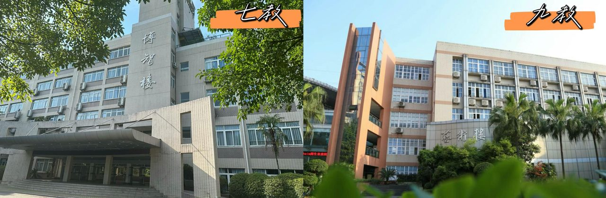
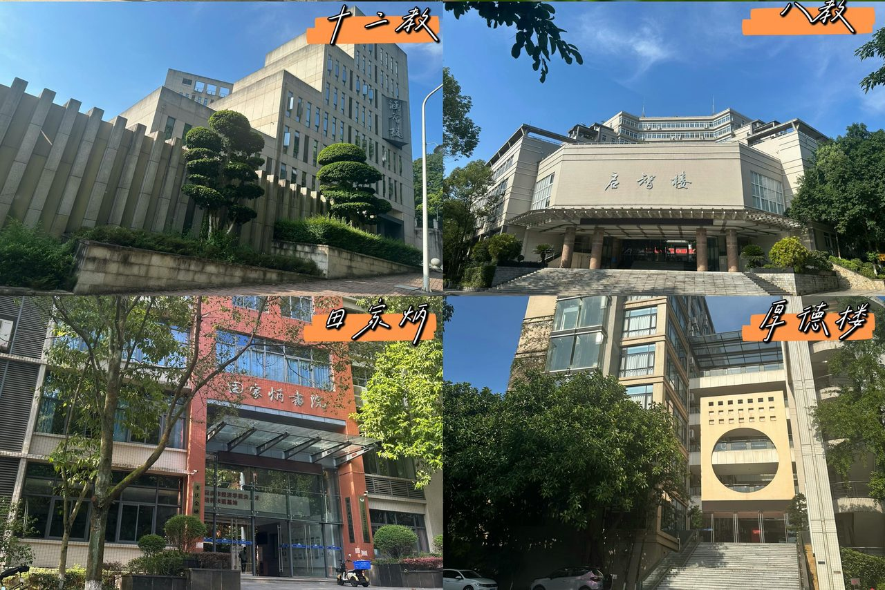
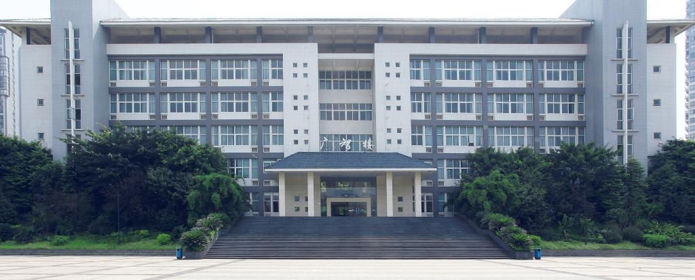
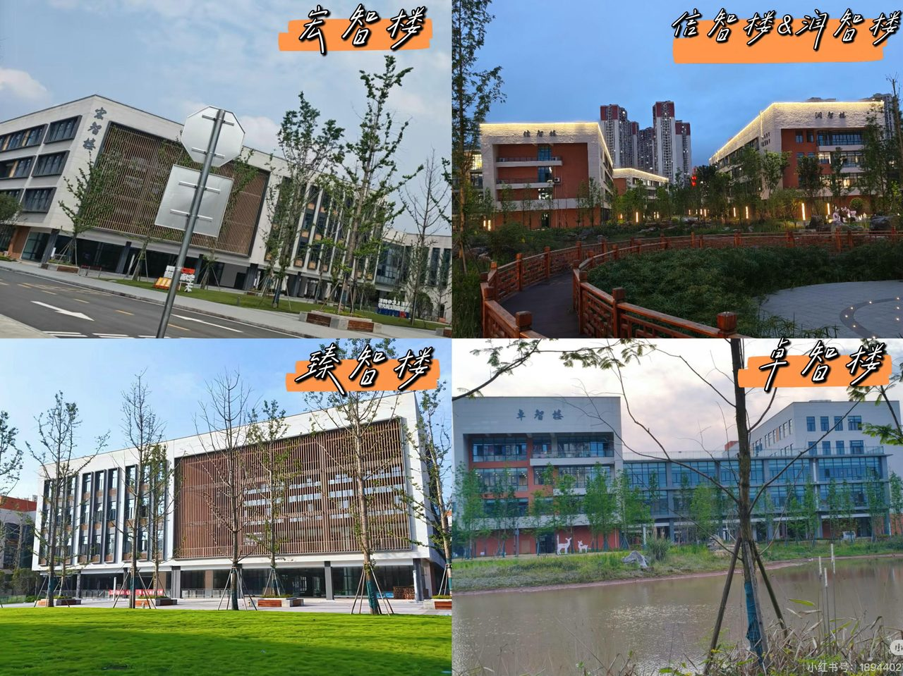
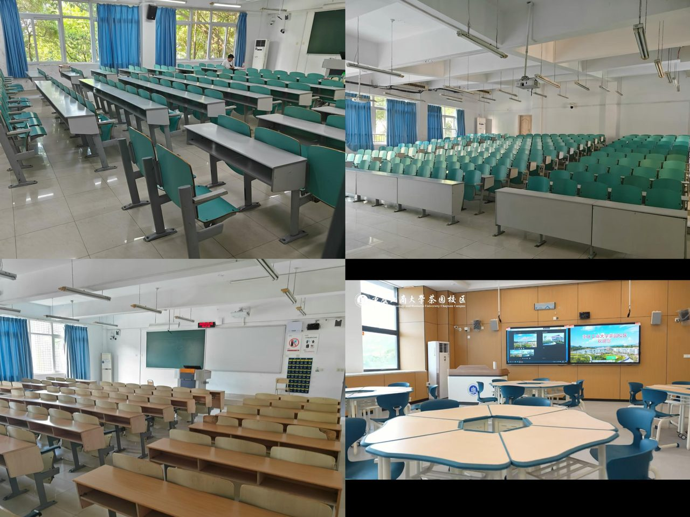

学姐提前打预防针
新生最容易迷路的就是南岸主校区——7 栋教学楼名字相似、位置分散。别慌，学姐带你一栋一栋认。兰花湖只有一栋楼，茶园全新平地，都很好找。
一、南岸主校区（核心教学区）
南岸主校区有 7 栋教学楼，大一到大四、研究生都在这里上课。下面按"你最常去的顺序"排：
1. 博智楼（七教，全校最大公共教学楼）
- 位置：校园中心，图书馆旁，南北宿舍中间——全校公共课主战场
- 适用课程：高数、大英、思政、通识选修课、大部分经管公共课
2. 启智楼（八教，综合实验教学楼）
- 位置：校前广场（图书馆和七教之间）
- 适用课程：实验、计算机机房、专业实训教室为主
3. 慧智楼（九教，文法大楼）
- 位置：南区，南操艺术楼旁
- 适用课程：法学、汉语言、新闻、公管类专业课，大量小班研讨教室
4. 涵智楼（十二教）
- 位置：筱园食堂旁，楼龄新，采光、通风、空调效果好，配套电梯
- 适用课程：主要承担通识课、公共选修课、部分专业基础课
5. 田家炳书院（五教）
- 位置：北区，外语活动中心旁，临翠湖独栋小楼
- 适用课程：研究生专业课、学术讲座、企业宣讲会定点场地
6. 国际商学院大楼（六教）
- 位置：北区，北 8 宿舍旁
7. 其他配套楼
- 明德楼/厚德楼：行政办公楼，少量行政类课程、答辩教室
- 艺术楼：视觉传达、编导、动画等艺术类专业课、画室、演播厅


二、兰花湖校区（大一新生片区）
兰花湖只有 广智楼（2 教）一栋核心教学楼，是全体大一新生上课的地方。步行 2 分钟可达馨园食堂、宿舍、图书馆。
建筑特色
- 对称回旋楼梯，网红打卡建筑，大厅设有学生原创涂鸦墙，校园氛围感强
- 1-4 层：标准多媒体教室，高数、英语、思修等全部大一通识课
- 顶层：小型多功能活动室，班会、社团例会、新生团建专用
配套优势
- 校区范围小，不用爬坡赶路
- 楼下就是草坪，课间休息方便
- 整栋楼全新翻新，桌椅设施崭新

三、茶园校区（工科新校区，2025年9月投用）
全新现代化教学集群，全部工科专业专属。教学楼、实验楼分区独立，硬件设备全校顶尖，无爬坡平地校园。
全校共享大型工科实验室——废油资源化、材料、化工、生态环境等重点科研实验室，设备全新、智能化操作平台。
1. 宏智楼（公共教学楼）
- 全校通用公共课大楼，承接高数、英语、思政等通识课程
- 大面积落地窗、中央空调，超大公共自习区，走廊休闲沙发配套齐全
2. 专业院系教学楼
- 信智楼：人工智能学院主楼，AI 实验室、大数据机房、智能实训基地
- 卓智楼：机械工程学院，机械制图、智能制造车间、工程绘图教室
- 润智楼：环境与资源、食品科学学院，化学实验室、食品检测实训室
- 臻智楼：公共综合实验楼

茶园三大亮点
① 所有楼宇连通风雨连廊，雨天不用淋雨；② 每层配备饮水站、共享自习区；③ 教学楼与食堂、宿舍步行 5 分钟内，通勤无压力。
四、三校区通用设施统一标准
不管你在哪个校区，这些标准都是统一的👇
- 教学设备：全部配备 LED 触控大屏、音响、录课设备，支持线上同步课堂
- 自习规则：无课时教室全天开放，学生可自由进入自习
- 通勤：兰花湖 ↔ 南岸主校区步行 10 分钟 / 免费校内校车；南岸至茶园有定制通勤公交
- 配套：每栋教学楼一楼设开水间、卫生间、自动贩卖机

学姐小贴士
开学第一周建议提前踩点——南岸校区教学楼多，第一次找教室容易晕。高德地图搜"重庆工商大学"可以直接看到各楼栋位置。兰花湖和茶园不用操心，一个只有一栋楼，一个全新平地，走走就熟了。